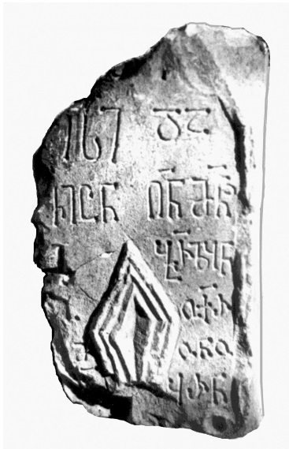

ხუნზახის IX წარწერა დაღესტნიდან
შინაარსი / Summary
მოსახსენებელი
ბიბლიოგრაფია Bibliography
კრიტიკული გამოცემა Interpretive Edition
ჯუარი ქრისტესი ვიც(უვე)ნ ღ(მერთმა)ნ მ(ო)ნ(ა)ჲ
შენი ბ(ა)რზბ(ა)ნ
ჩვენო ოქ(ა)რ
5მონო -
ზანი ყ(ა)რნ(ა)
დიპლომატიური გამოცემა Diplomatic Edition
ႿႳႠႰႨ ႵႰႨႱႲႤႱႨ ႥႨႺႬ ႶႬ ႫႬჂ
ႸႤႬႨ ႡႰႦႡႬ
ႹႥႤႬႭ ႭႵႰ
5ႫႭႬႭ
ႦႠႬႨ ႷႰႬ

ხუნზახის IX წარწერა დაღესტნიდან
{'ka': 'ჯუარი ქრისტესი, დაგვიცუენ ღმერთმან მონაჲ შენი ბარზბან (ხუნძ.), ჩვენო ოქარდუ, მონაზონი ყარნა.'}
{'default': 'გ. ღამბაშიძემ 2014 წელს გამოაქვეყნა ამ წარწერის წაკითხვის საკუთარი \n ვერსია და პალეოგრაფიული ნიშნების მიხედვით დაათარიღა იგი X საუკუნის მეორე ნახევრითა და XI საუკუნით\n (Гамбашидзе Г.Г. Грузинская надпись второй пол. Х – ХI вв. на фрагменте каменного креста \n из с. Хунзах (Дагестан). Дагестан в кавказском историко-культурном пространстве. Махачкала, 2014, 95-97). \n შაჰბან ჰაფიზოვს 1970 წელს ხელთ ჩაუვარდა მაჰომედ რაჯაბოვის მიერ გადაღებული ფოტოსურათი, ხოლო თვით ჯვრის ნაშთის \n ადგილსამყოფელი ვერ დაადგინა. ჯვრის ფრაგმენტზე ასომთავრულით დაწერილია მემორიალური 6-სტრიქონიანი ტექსტი, \n რომელიც ა, ბ, დ ასოების მოხაზულობის მიხედვით მან IX-X საუკუნეებით დაათარიღა.\n გ. ღამბაშიძეს გაძნელებია მეოთხე სტრიქონის მთავარი ნაწილის ამოკითხვა \n და წარმოადგენს ბურზაყან, ბორზაყან, ბარზაყან ვარიანტებს (იქვე, გვ, 95-97), არადა გარკვევით ჩანს, \n რომ ამ სტრიქონის მეოთხე ასოს ადგილის სიმცირის გამო აკლია წანაზარდი ქვედა ნაწილზე, \n ხოლო ყველა დანარჩენი ელემენტით ემთხვევა იმავე სიტყვის პირველ ბ ასოს და არ არის \n აუცილებლობა მისი ყ ასოდ წაკითხვისა: ამ სიტყვაში ორივე ასოს ზედა ნაწილების ხაზები ერთ სიმაღლეზეა მაშინ, \n როცა ყ ასოს მარცხენა განშტოება აშკარად უფრო ქვემოთ წერია მარჯვენასთან შედარებით, ხოლო ასოს ქვემო \n წერტილს არა აქვს წანაზარდი მარჯვნივ, როგორც ეს უნდა ჰქონოდა ბ ასოს. ამრიგად, შაჰბან ჰაფიზოვის აზრით, აქ საკუთარი სახელი \n კი არა, ტიტული ბარზბან არის წარმოდგენილი. შუა საუკუნეთა წყაროებში (კერძოდ, „ნიჰაჲათ-ალ-იჰრაბში“) გვამცნობენ, \n რომ ხოსრო ანუშირვანმა (VI ს.) დაღესტანში დანიშნა მემკვიდრეობითი მარზპანი (საშუალსპარს. „საზღვრის მცველი“) \n „სარირის მფლობელის“ ტიტულით (Айтберов Т.М. Древний Хунзах и хунзахцы. Махачкала, 1990, 29). \n ხუნძური ენის ფონეტიკის გათვალისწინებით მარზპან ფორმის ცვლა \n ბარზბან-ით სავსებით შესაძლებელია. ამრიგად, აქ ჯერ გარდაცვლილის ტიტული იხსენიება, მერე კი - მისი სახელი. \n გარდა ამისა, მფარველობის შესახებ თხოვნისას მკაფიოდაა მითითებული „მონაჲ ღმრთისა“, ანუ იგულისხმება \n ერთი ადამიანი და არა პირთა ჯგუფი, როგორც ამას ფიქრობს გ. ღამბაშიძე. შაჰბან ჰაფიზოვი ვერც იმის საფუძველს ხედავს,\n რომ მეოთხე სტრიქონში ამოიკითხოს პირსახელი ოქროპირ. აქ უნდა გვქონდეს ხუნძური პირსახელი ოქარდუ \n (შდრ. ხუნძ. ოქარდულავ Магомедов А. Чародинцы: прошлое, настоящее, будущее. Махачкала, 2000, 315.), \n რაკიღა ქარაგმის ნიშანი ამ სიტყვაში ქ და რ ასოებს შორის ზის, რაც მკვლევარს ავარაუდებინებს \n სიტყვის შემოკლებას სწორედ ამ ადგილას. გასათვალისწინებელია ისიც, რომ მომდევნო სტრიქონის დასაწყისში \n არის საკმარისი ადგილი (ლაკუნა) მოცემული სახელის ბოლო ორი ასოს (დუ-ს) ჩასაწერად. გარდა ამისა, \n გ. ღამბაშიძე ტექსტის ბოლო საკუთარი სახელის აღდგენისას არ ითვალისწინებს ქართულ ეპიგრაფიკაში \n გავრცელებულ სიტყვათა დაქარაგმების წესებს, როცა თანხმოვნებს არ აკლებდნენ ხოლმე, და ამგვარად \n კითხულობს ყარამან სახელს (Гамбашидзе Г.Г. Грузинская надпись второй пол. Х – ХI вв. на фрагменте каменного кpеста… 96) \n მხოლოდ სამი ასოს (ყ.რ.ნ-ს) საფუძველზე. ხუნძურ ანთროპონიმიაში არსებობს ამავე ბგერების შემცველი მამაკაცის პირსახელები. \n მაგალითად, სოფელ ჭოხში ცნობილია სახელი ყარნა და გვარი ყარნაილოვი. რაკი ამ პირის შესახებ წერია, რომ ის მონაზონი ყოფილა,\n შაჰბან ჰაფიზოვი ვარაუდობს, რომ მისი ნახელავია წარწერაც და, შესაძლოა, თვით ჯვარიც.'}
<div type="edition" xml:lang="ka" ana="mtavruli" xml:space="preserve">
<ab>
<lb n="1"/><w lemma="ქრისტე"><expan><abbr>ქ</abbr><ex>რისტ</ex><abbr>ე</abbr></expan></w>
<w lemma="განსუენება"><expan><abbr>გა</abbr><ex>ნ</ex><abbr>ო</abbr><ex>ჳ</ex><abbr>ს</abbr><ex>უ</ex><abbr>ენე</abbr></expan></w>
<w lemma="სულ">სოჳ<lb n="2" break="no"/>ლსა</w>
<name nymRef="ვაჩა">ვაჩაჲს<lb n="3" break="no"/>ასა</name>
<name nymRef="გურა"><expan><abbr>გო</abbr><ex>ჳ</ex><abbr>რაჲ<lb n="4" break="no"/>სასა</abbr></expan></name>
<name nymRef="მირა"><expan><abbr>მ</abbr><ex>ი</ex><abbr>რა</abbr><ex>ჲ</ex><abbr>ს</abbr><ex>ა</ex><abbr>ს</abbr><ex>ა</ex></expan></name>
</ab>
</div>